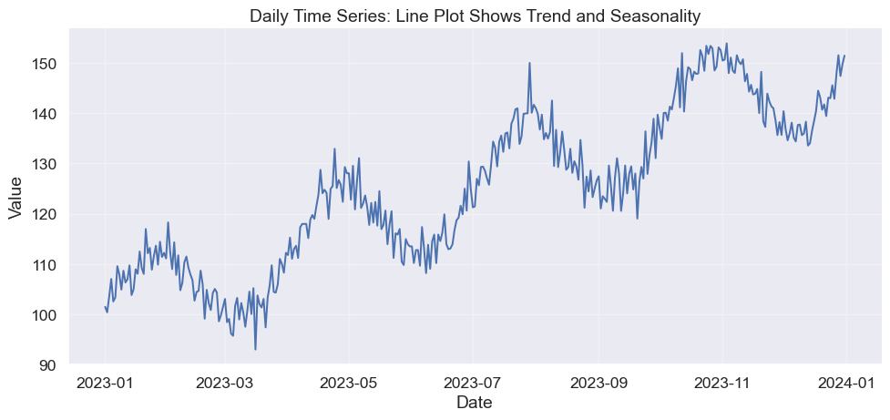
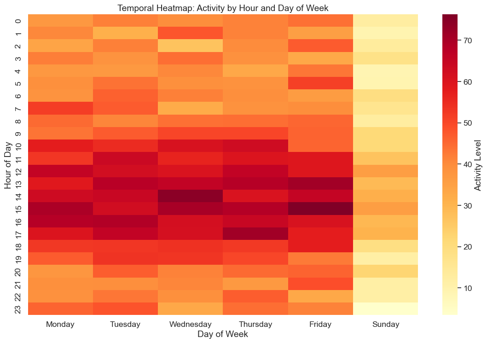
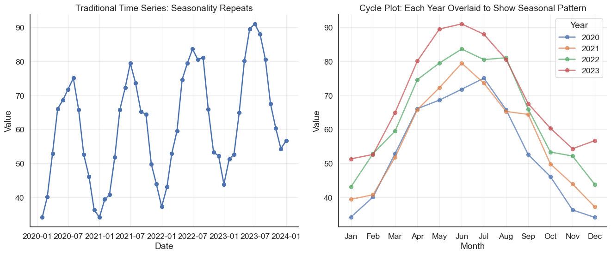
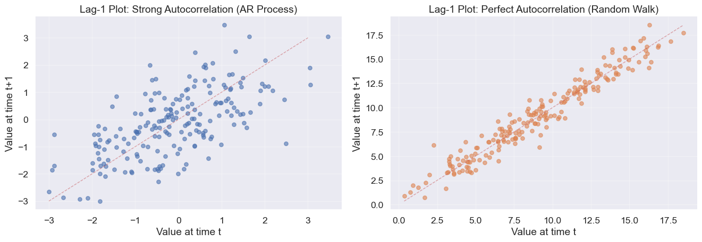

This module explores how to visualize time series data effectively, moving beyond simple line charts to reveal true underlying patterns. We will examine how choices in scale and geometry, such as small multiples, logarithmic axes, and lag plots, can either expose genuine trends or manufacture misleading narratives.
The nature of time
Let’s talk about time. In March 2020, charts of COVID-19 cases told vastly different stories depending on how they were visualized. Some used linear scales, showing a terrifying vertical wall. Others used log scales, showing a straight line. Politicians cherry-picked time windows to claim “flattening curves.”
Time series data is special because it implies causality and momentum. Unlike other variables, time flows in one direction. Your choices of scale, aggregation, and geometry determine whether you reveal a genuine pattern or manufacture a misleading narrative.
Line plots and the continuity illusion
The most fundamental choice is whether to connect the dots. A line plot suggests continuity, implying that a value exists at every moment between your measurements. This works for temperature or stock prices, where the variable has momentum.
Code
import numpy as npimport pandas as pdimport matplotlib.pyplot as pltimport seaborn as sns# Set stylesns.set_style("white")sns.set(font_scale=1.2)# Generate synthetic time series with trend and seasonalitynp.random.seed(42)n_points =365dates = pd.date_range('2023-01-01', periods=n_points, freq='D')trend = np.linspace(100, 150, n_points)seasonal =10* np.sin(2* np.pi * np.arange(n_points) /365*4) # Quarterly seasonalitynoise = np.random.normal(0, 3, n_points)values = trend + seasonal + noisedf = pd.DataFrame({'date': dates, 'value': values})# Create line plotfig, ax = plt.subplots(figsize=(12, 5))ax.plot(df['date'], df['value'], linewidth=1.5, color=sns.color_palette()[0])ax.set_xlabel('Date')ax.set_ylabel('Value')ax.set_title('Daily Time Series: Line Plot Shows Trend and Seasonality')ax.grid(True, alpha=0.3)sns.despine()

Basic line plot showing a time series with trend and seasonality
But what if your data is discrete? If you plot distinct sales events or email arrivals as a line, you create a false narrative of values existing in the gaps. In those cases, let the silence between points speak.
Line plot vs scatter plot: connecting points implies continuity
Comparing series: The spaghetti problem
Often you need to compare multiple series. The natural instinct is to overlay them on the same plot. This works for two or three variables, but as the count rises, you fall into the spaghetti trap where individual trends get lost in the tangle.
Multiple time series overlaid with different colors
The solution is small multiples (or faceting). By giving each series its own stage while locking the axes, you preserve both the individual trends and the ability to compare them.
Small multiples avoid spaghetti plots when comparing many time series
The power of scale: Linear vs Log
Perhaps the most consequential choice in time series visualization is the y-axis scale. Your choice defines the question you are answering. A linear scale asks “How much did it increase?” A log scale asks “How fast is it growing?”
In the example below, the linear scale suggests an explosive crisis at the end. The log scale reveals that the growth rate has been constant the entire time.
The same exponential growth looks different on linear vs. log scales
Why Log Scales?
Log scales are essential for data spanning orders of magnitude or when percentage changes matter more than absolute units. However, they can downplay absolute magnitude. A jump from 100 to 1,000 looks the same as 10,000 to 100,000.
Smoothing and trends
Real data is messy. Smoothing via moving averages mimics how we squint at a chart to blur out the details and see the trend.
The window size controls the trade-off. A small window keeps the texture, showing volatility. A large window reveals the structure, showing the trend.
Moving averages smooth noise to reveal underlying trends
Showing uncertainty
Predicting the future is an exercise in humility. A forecast without an error bar is a lie of precision. Use ribbon plots to visualize the widening cone of uncertainty as time moves forward.
Ribbon plots show uncertainty bands around predictions
The rhythm of time: Heatmaps and Cycles
Time often cycles rather than marches. Heatmaps and cycle plots break the linear narrative to reveal the heartbeat of the data, such as daily lulls, weekend spikes, or seasonal waves.
Code
# Generate synthetic hourly data with daily and weekly patternsnp.random.seed(42)hours = pd.date_range('2023-01-01', periods=24*7*4, freq='H') # 4 weeks# Patterns: higher activity during business hours and weekdayshour_of_day = hours.hourday_of_week = hours.dayofweek# Activity patternbase_activity =20hour_effect =30* np.exp(-((hour_of_day -14)**2) /20) # Peak at 2 PMweekday_effect = np.where(day_of_week <5, 20, -10) # Weekdays highernoise = np.random.normal(0, 5, len(hours))activity = base_activity + hour_effect + weekday_effect + noisedf_hourly = pd.DataFrame({'datetime': hours,'activity': activity,'hour': hour_of_day,'day_name': hours.day_name(),'week': (hours.day //7) +1})# Take first week for heatmapdf_week = df_hourly[df_hourly['week'] ==1].copy()# Pivot for heatmapheatmap_data = df_week.pivot_table(values='activity', index='hour', columns='day_name', aggfunc='mean')# Reorder columns to start with Mondayday_order = ['Monday', 'Tuesday', 'Wednesday', 'Thursday', 'Friday', 'Saturday', 'Sunday']heatmap_data = heatmap_data[[day for day in day_order if day in heatmap_data.columns]]# Plot heatmapfig, ax = plt.subplots(figsize=(12, 8))sns.heatmap(heatmap_data, cmap='YlOrRd', annot=False, fmt='.0f', cbar_kws={'label': 'Activity Level'}, ax=ax)ax.set_xlabel('Day of Week')ax.set_ylabel('Hour of Day')ax.set_title('Temporal Heatmap: Activity by Hour and Day of Week')plt.tight_layout()
/var/folders/j7/9dgqq5g53vnbsbmvh2yqtckr0000gr/T/ipykernel_7138/3637488205.py:3: FutureWarning: 'H' is deprecated and will be removed in a future version, please use 'h' instead.
hours = pd.date_range('2023-01-01', periods=24*7*4, freq='H') # 4 weeks

Heat map reveals daily and weekly patterns in temporal data
Code
# Generate monthly data with strong annual seasonalitynp.random.seed(42)months = pd.date_range('2020-01-01', periods=48, freq='M')month_num = np.tile(np.arange(1, 13), 4) # 4 years of monthly data# Seasonal pattern (higher in summer, lower in winter)seasonal_effect =20* np.sin(2* np.pi * (month_num -3) /12)trend_effect =0.5* np.arange(48)noise = np.random.normal(0, 3, 48)values =50+ seasonal_effect + trend_effect + noisedf_seasonal = pd.DataFrame({'date': months,'value': values,'month': month_num,'year': months.year,'month_name': months.month_name()})# Create cycle plotfig, axes = plt.subplots(1, 2, figsize=(14, 6))# Traditional time seriesaxes[0].plot(df_seasonal['date'], df_seasonal['value'], marker='o', linewidth=2)axes[0].set_xlabel('Date')axes[0].set_ylabel('Value')axes[0].set_title('Traditional Time Series: Seasonality Repeats')axes[0].grid(True, alpha=0.3)# Cycle plotmonth_names_short = ['Jan', 'Feb', 'Mar', 'Apr', 'May', 'Jun','Jul', 'Aug', 'Sep', 'Oct', 'Nov', 'Dec']for year in df_seasonal['year'].unique(): year_data = df_seasonal[df_seasonal['year'] == year] axes[1].plot(year_data['month'], year_data['value'], marker='o', linewidth=2, label=str(year), alpha=0.7)axes[1].set_xlabel('Month')axes[1].set_ylabel('Value')axes[1].set_xticks(range(1, 13))axes[1].set_xticklabels(month_names_short)axes[1].set_title('Cycle Plot: Each Year Overlaid to Show Seasonal Pattern')axes[1].legend(title='Year')axes[1].grid(True, alpha=0.3)for ax in axes: sns.despine(ax=ax)plt.tight_layout()
/var/folders/j7/9dgqq5g53vnbsbmvh2yqtckr0000gr/T/ipykernel_7138/3601020590.py:3: FutureWarning: 'M' is deprecated and will be removed in a future version, please use 'ME' instead.
months = pd.date_range('2020-01-01', periods=48, freq='M')

Cycle plot reveals seasonal patterns by separating each cycle
The memory of the past: Autocorrelation
Does the past predict the future? Lag plots visualize the system’s memory by plotting x_t against x_{t-1}. A tight diagonal implies strong memory (autocorrelation) while a scattered cloud implies random noise.
Code
# Generate time series with autocorrelationnp.random.seed(42)n =200# AR(1) process: strong autocorrelationar_series = np.zeros(n)ar_series[0] = np.random.normal(0, 1)for i inrange(1, n): ar_series[i] =0.7* ar_series[i-1] + np.random.normal(0, 1)# Random walk: perfect autocorrelation at lag 1random_walk = np.random.normal(0, 1, n).cumsum()fig, axes = plt.subplots(1, 2, figsize=(14, 5))# Lag-1 plot for AR(1) seriesaxes[0].scatter(ar_series[:-1], ar_series[1:], alpha=0.6, s=30)axes[0].set_xlabel('Value at time t')axes[0].set_ylabel('Value at time t+1')axes[0].set_title('Lag-1 Plot: Strong Autocorrelation (AR Process)')axes[0].plot([-3, 3], [-3, 3], 'r--', alpha=0.5, linewidth=1)axes[0].grid(True, alpha=0.3)# Lag-1 plot for random walkaxes[1].scatter(random_walk[:-1], random_walk[1:], alpha=0.6, s=30, color=sns.color_palette()[1])axes[1].set_xlabel('Value at time t')axes[1].set_ylabel('Value at time t+1')axes[1].set_title('Lag-1 Plot: Perfect Autocorrelation (Random Walk)')axes[1].plot([random_walk.min(), random_walk.max()], [random_walk.min(), random_walk.max()], 'r--', alpha=0.5, linewidth=1)axes[1].grid(True, alpha=0.3)for ax in axes: sns.despine(ax=ax)plt.tight_layout()

Lag plots reveal autocorrelation structure in time series
Summary
Time series visualization is about making choices that honestly represent temporal patterns. By following these principled visualization practices, you ensure your temporal data tells its true story, not the story you wish it told.